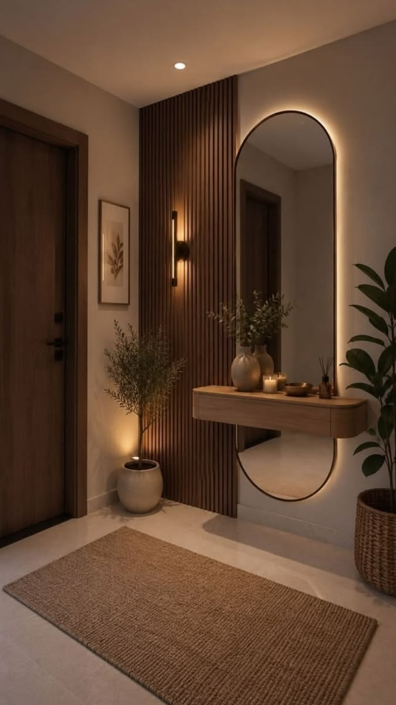

Motion Lab · приёмы из референса marina_uiux
Разобрал рил: там не «много эффектов», а три жёстких правила — огромный объект, типографика в два порядка по размеру и движение, которое связано с жестом или прокруткой, а не запускается само. Ниже каждый приём живой, на фотографиях мастерской.
Главный трюк рила: карточки не исчезают и не появляются заново, а переезжают из сетки в дугу, каждая со своим стаггером 24–30 мс. Пружинка и stagger — единственное, что делает это дорогим: длительность ~0.8 с, кривая cubic-bezier(.22,1,.36,1), никакого bounce.
190 px на телефоне против 10 px подписи в углу. Строки раскрываются маской снизу (clip-path: inset) с задержкой 120 мс, буквы не «печатаются» и не скачут. Одна строка залита фотографией через background-clip: text — предмет читается внутри букв.
В реле предмет выходит из темноты — это и есть «дорого». Здесь то же самое делает mask-image с радиальным градиентом, который следует за указателем; на телефоне центр маски медленно едет по прокрутке. Свет мягкий: переход 55% → 72%.

Тонкая линия, счётчик с ведущим нулём, подписи в 10 px с трекингом .2em по краям, номер раздела. Эти элементы не анимируются вообще — и именно поэтому анимация рядом выглядит дорого.